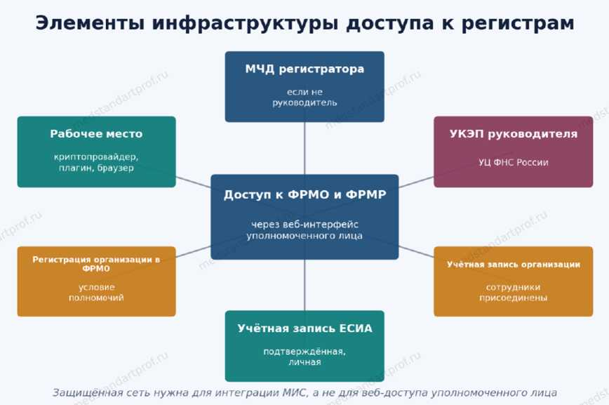
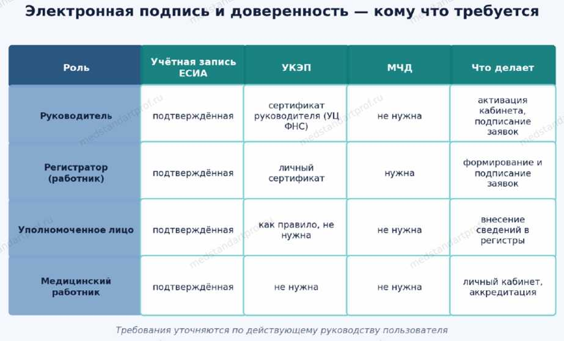
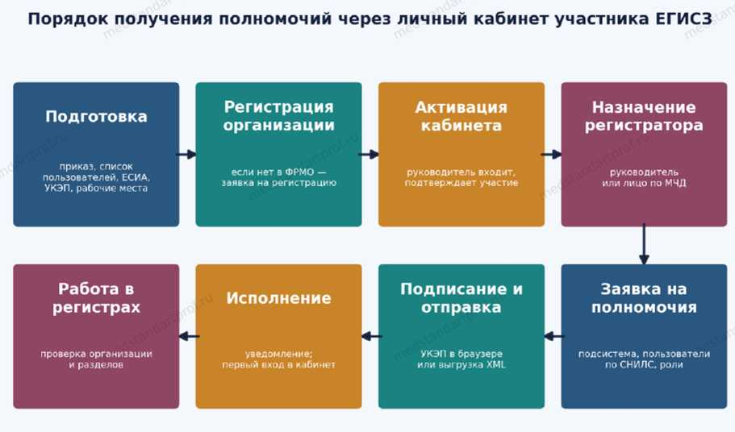
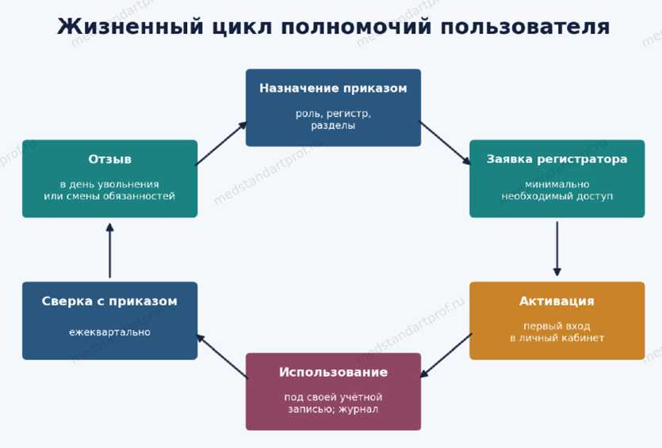
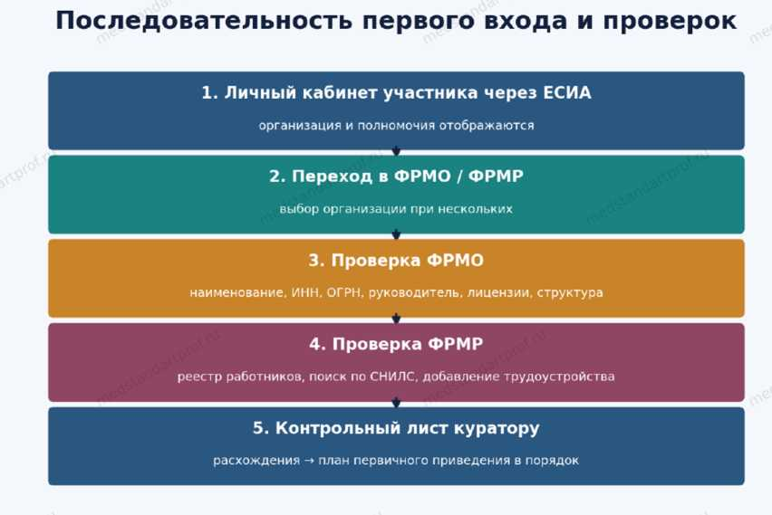
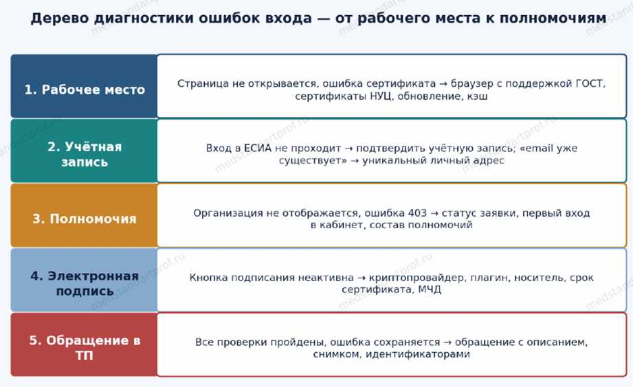

Прежде чем уполномоченное лицо впервые откроет карточку организации в ФРМО, должна быть подготовлена инфраструктура доступа: учётные записи, электронная подпись, доверенности и рабочее место. Большинство обращений в техническую поддержку на этапе подключения связано не с самими регистрами, а с этой подготовкой: неподтверждённая учётная запись, просроченный сертификат подписи, браузер без поддержки российских сертификатов. Лекция описывает каждый элемент инфраструктуры и требования к нему.
Цель лекции — определить состав инфраструктуры доступа к регистрам, требования к учётным записям, электронной подписи, доверенностям и рабочему месту, а также порядок их подготовки.
Для работы с регистрами через веб-интерфейс необходимы:
|
Элемент |
Назначение |
Кому нужен |
|
Учётная запись физического лица в ЕСИА (подтверждённая) |
Идентификация и аутентификация при входе во все подсистемы |
Руководитель, регистратор, каждое уполномоченное лицо |
|
Учётная запись организации в ЕСИА с присоединёнными сотрудниками |
Подтверждение принадлежности работника к организации |
Организация; руководитель создаёт, работники присоединяются |
|
Усиленная квалифицированная электронная подпись |
Подписание заявок на предоставление полномочий, действия в личном кабинете участника |
Руководитель; лицо, действующее по доверенности |
|
Машиночитаемая доверенность |
Подтверждение полномочий работника действовать от имени организации при использовании его личной подписи |
Регистратор, если это не руководитель |
|
Рабочее место с криптопровайдером, плагином электронной подписи и браузером с поддержкой российских сертификатов |
Техническая возможность входа и подписания |
Каждое рабочее место, с которого осуществляется доступ |
|
Регистрация организации в |
Условие предоставления |
Организация |
|
ФРМО |
полномочий пользователям |
Защищённая сеть передачи данных (подключение по сертифицированным средствам криптографической защиты) требуется для интеграционного взаимодействия медицинской информационной системы с единой системой и не является условием для работы уполномоченного лица через веб-интерфейс регистров.

Рисунок 1. Элементы инфраструктуры доступа к регистрам
Вход во все сервисы единой системы осуществляется через ЕСИА — учётную запись портала государственных услуг. Требуется подтверждённая учётная запись: упрощённая (только телефон и электронная почта) и стандартная (проверены паспорт и СНИЛС, но личность не подтверждена) не дают доступа. Подтверждение осуществляется через онлайн-банк, центр обслуживания
(многофункциональный центр), электронную подпись или заказным письмом.
Учётная запись — персональная. Она принадлежит физическому лицу, а не должности; при увольнении работник сохраняет свою учётную запись, а организация отзывает выданные ему полномочия. Использование одной учётной записи несколькими работниками недопустимо: все действия в регистрах фиксируются за учётной записью, и организация не сможет установить, кто фактически внёс сведения.
Учётную запись юридического лица (индивидуального предпринимателя) на портале государственных услуг создаёт руководитель с использованием квалифицированной электронной подписи организации. После создания руководитель присоединяет к организации сотрудников — работников, имеющих подтверждённые учётные записи физических лиц, — и при необходимости назначает им роли на портале. Присоединение к организации является условием, при котором сотрудник может быть указан в заявке на предоставление полномочий в единой системе как работник данной организации.
• СНИЛС в учётной записи не совпадает с СНИЛС в кадровых документах (ошибка при вводе) — заявка на полномочия отклоняется или полномочия выдаются «другому» лицу.
• Учётная запись не подтверждена — вход невозможен.
• Работник не присоединён к организации — при подаче заявки его не удаётся выбрать как сотрудника.
• Адрес электронной почты в учётной записи совпадает с адресом другого пользователя единой системы (например, общий адрес организации) — ошибка «пользователь с таким адресом уже существует». Каждому пользователю нужен уникальный адрес электронной почты.
В соответствии с Федеральным законом от 06.04.2011 № 63-ФЗ для подписания заявок и юридически значимых действий в единой системе применяется усиленная квалифицированная электронная подпись (УКЭП). Квалифицированные сертификаты выдаются:
• руководителям юридических лиц и индивидуальным предпринимателям — удостоверяющим центром ФНС России (и его доверенными лицами);
• работникам организаций как физическим лицам аккредитованными удостоверяющими центрами.
Сертификат руководителя содержит сведения об организации и подтверждает право действовать от её имени без доверенности. Сертификат работника — личный, содержит только сведения о физическом лице; полномочия действовать от имени организации подтверждаются машиночитаемой доверенностью.
Сертификат выдаётся на срок, как правило, до 15 месяцев. Организация обязана отслеживать сроки действия сертификатов руководителя и регистратора и получать новые заблаговременно: просроченный сертификат — частая причина невозможности подписать заявку в момент, когда полномочия нужны срочно (например, при смене уполномоченного лица).
Ключ электронной подписи хранится на защищённом носителе (токене) или в защищённом хранилище рабочего места. Носитель является персональным; его передача другому лицу, хранение ПИН-кода вместе с носителем, использование подписи уволенного работника — нарушения, влекущие недействительность подписанных документов. При компрометации ключа сертификат отзывается через удостоверяющий центр.
С 1 сентября 2024 года работник, подписывающий документы от имени организации личной квалифицированной подписью, должен подтверждать полномочия машиночитаемой доверенностью (МЧД) — доверенностью в электронной форме установленного формата, подписанной руководителем. В единой системе МЧД требуется лицу, которое выполняет функции регистратора (подписывает заявки на предоставление полномочий) вместо руководителя.
МЧД формируется в едином формате, установленном Минцифры России, с использованием сервисов портала государственных услуг, удостоверяющих центров или информационных систем операторов электронного документооборота, подписывается УКЭП руководителя и регистрируется в распределённом реестре. В доверенности указываются реквизиты организации и доверителя, сведения о представителе, полномочия (в соответствии с классификатором) и срок действия. Организация ведёт учёт выданных МЧД и отзывает их при увольнении представителя.
Если заявки подписывает руководитель собственной подписью, доверенность не требуется. Уполномоченным лицам, которые только вносят сведения в регистры через веб-интерфейс, электронная подпись и доверенность для этого действия, как правило, не требуются: достаточно учётной записи ЕСИА и предоставленных полномочий. Конкретные требования определяются руководством пользователя действующей версии интерфейса.

Рисунок 2. Электронная подпись и доверенность — кому что требуется
На рабочем месте, с которого осуществляется доступ к порталам единой системы и подписание заявок, устанавливаются:
1. Криптопровайдер — сертифицированное средство криптографической защиты информации, поддерживающее российские алгоритмы (например, КриптоПро CSP или аналогичное), с действующей лицензией.
2. Плагин электронной подписи для браузера — расширение, позволяющее подписывать данные в веб-интерфейсе.
3. Браузер с поддержкой российских криптографических алгоритмов и сертификатов Национального удостоверяющего центра Минцифры России (например, Яндекс Браузер, Атом или иной браузер на базе Chromium с поддержкой ГОСТ). Порталы единой системы используют защищённое соединение по российским сертификатам; браузеры без их поддержки показывают предупреждение «небезопасное соединение» или не открывают страницу.
4. Драйверы носителя ключа (токена).
5. Антивирусное программное обеспечение и актуальные обновления операционной системы — требование защиты персональных данных.
Доступ к порталам единой системы осуществляется через сеть Интернет по защищённому протоколу. Если в организации используется прокси-сервер или межсетевой экран с фильтрацией, служба информационных технологий обеспечивает доступ к адресам порталов единой системы и удостоверяющих центров. Использование VPN-сервисов, изменяющих страну исходящего адреса, может блокировать доступ.
Перед первым входом служба информационных технологий проверяет:
• открывается ли страница личного кабинета участника единой системы без предупреждений о сертификате;
• определяется ли носитель ключа и виден ли сертификат в криптопровайдере;
• работает ли плагин электронной подписи (проверка на тестовой странице удостоверяющего центра);
• не истёк ли срок действия сертификата и лицензии криптопровайдера.
Полномочия пользователям предоставляются в отношении конкретной организации, зарегистрированной в ФРМО. Если организация в реестре отсутствует (новая организация, впервые получившая лицензию), сначала подаётся заявка на регистрацию организации. Проверить наличие организации можно по справочнику «Реестр медицинских организаций Российской Федерации» в федеральном реестре нормативно-справочной информации по ИНН или наименованию. Порядок регистрации новой организации рассматривается в лекции 4.2.
До начала технических действий куратор обеспечивает:
1. Издание приказа о назначении ответственных и регистратора (модуль 3).
2. Наличие у руководителя действующей УКЭП; при делегировании функций регистратора — оформление МЧД.
3. Наличие подтверждённых учётных записей ЕСИА у всех уполномоченных лиц и их присоединение к организации на портале государственных услуг; уникальные адреса электронной почты.
4. Подготовку рабочих мест службой информационных технологий.
5. Проверку регистрации организации в ФРМО.
Результат оформляется чек-листом готовности, после чего выполняется пошаговая процедура получения полномочий (практикум 4).
Инфраструктура доступа к регистрам состоит из подтверждённых учётных записей ЕСИА физических лиц, учётной записи организации с присоединёнными сотрудниками, квалифицированной электронной подписи руководителя (или представителя по машиночитаемой доверенности) и подготовленного рабочего места с криптопровайдером, плагином подписи и браузером с поддержкой российских сертификатов. Условием предоставления полномочий является регистрация организации в ФРМО. Подготовка инфраструктуры — совместная задача куратора, кадровой службы и службы информационных технологий, и она должна быть завершена до подачи заявок на полномочия.
1. Федеральный закон от 06.04.2011 № 63-ФЗ «Об электронной подписи» (с последующими изменениями и дополнениями), статьи 5, 10, 14, 17.2,17.5.
2. Постановление Правительства Российской Федерации от 28.11.2011 № 977 «О федеральной государственной информационной системе «Единая система идентификации и аутентификации...» (с последующими изменениями и дополнениями).
3. Постановление Правительства Российской Федерации от 09.02.2022 № 140 «О единой государственной информационной системе в сфере здравоохранения» (с последующими изменениями и дополнениями).
4. Приказ Минцифры России об утверждении единых требований к формам доверенностей, необходимых для использования квалифицированной электронной подписи (действующая редакция).
5. Руководство пользователя личного кабинета участника ЕГИСЗ; руководства пользователя ФРМО и ФРМР. — URL: portal.egisz.rosminzdrav.ru.
6. Федеральный реестр нормативно-справочной информации. — URL: nsi.rosminzdrav.ru.
7. Портал государственных услуг Российской Федерации. — URL: gosuslugi.ru.
Порядок предоставления доступа к подсистемам единой системы изменялся несколько раз: от бумажных заявок, направляемых в техническую поддержку, через услугу на портале государственных услуг — к личному кабинету участника единой системы, в котором организация самостоятельно управляет полномочиями своих пользователей. Действующий порядок построен на личном кабинете; прежние каналы сохраняются для отдельных случаев. Лекция описывает логику действующего порядка и действия организации на каждом этапе.
Цель лекции — раскрыть порядок регистрации организации в единой системе, предоставления и отзыва полномочий пользователей через личный кабинет участника ЕГИСЗ, а также действия в особых ситуациях.
1. Эволюция порядка предоставления доступа
|
Период |
Порядок |
Особенности |
|
До 2020-х годов |
Заявка по установленной форме с подписью руководителя и печатью направляется в техническую поддержку по электронной почте в двух форматах (скан и текстовый файл) |
Ручная обработка, срок 5-7 рабочих дней и более |
|
Переходный период |
Услуга на едином портале государственных услуг «Предоставление доступа заявителя в подсистемах ФРМО и ФРМР» |
Заявка подаётся от учётной записи организации, указываются роль, СНИЛС и электронная почта пользователя |
|
С августа 2025 года |
Личный кабинет участника ЕГИСЗ («Мой ЕГИСЗ»): организация назначает регистратора, формирует и подписывает заявки на полномочия, отзывает полномочия самостоятельно |
Требуется квалифицированная электронная подпись и, при делегировании, машиночитаемая доверенность |
Организация должна руководствоваться порядком, описанным в действующем руководстве пользователя личного кабинета, размещённом на портале оперативного взаимодействия участников единой системы. Ниже описана логика действующего порядка; наименования разделов
интерфейса приводятся по руководству и могут уточняться при обновлениях.
Личный кабинет участника — единая точка управления взаимодействием организации с единой системой. В нём организация:
• подтверждает своё участие (активирует кабинет);
• назначает регистратора — лицо, управляющее полномочиями пользователей;
• формирует заявки на предоставление полномочий в подсистемах (ФРМО, ФРМР и других);
• подписывает заявки электронной подписью;
• отслеживает статус заявок;
• просматривает реестр пользователей организации и их полномочий;
• отзывает полномочия.
Вход в личный кабинет осуществляется через ЕСИА. При первом входе руководителя система предлагает выбрать организацию, к которой он относится по данным ЕСИА, и подтвердить участие. Если руководитель делегирует функции управления доступом, он назначает регистратором работника, действующего по машиночитаемой доверенности с соответствующим полномочием. Регистратор входит в кабинет под собственной учётной записью и после проверки доверенности получает возможность управлять заявками.
2.3. Роли в личном кабинете
|
Роль |
Функции |
|
Руководитель организации |
Полный доступ: активация, назначение регистратора, подписание заявок |
|
Регистратор |
Формирование, подписание (при наличии полномочия в доверенности) и отслеживание заявок, отзыв полномочий |
|
Пользователь единой системы |
Работник, получивший полномочия в подсистеме; после первого входа в личный кабинет видит свои полномочия |

Рисунок 1. Порядок получения полномочий через личный кабинет участника ЕГИСЗ
Регистрация требуется организации, которая отсутствует в реестре: вновь созданной, впервые получившей лицензию, а также при реорганизации с образованием нового юридического лица. Реорганизованная организация, сохранившая ИНН, не регистрируется заново — в реестре актуализируются её сведения.
1. Проверка отсутствия организации в реестре — по справочнику «Реестр медицинских организаций Российской Федерации» в федеральном реестре нормативно-справочной информации (поиск по ИНН, ОГРН, наименованию).
2. Подготовка сведений: полное и сокращённое наименование по уставу, ИНН, КПП, ОГРН, организационно-правовая форма, юридический адрес, сведения о руководителе, сведения о лицензии, сведения об уполномоченных лицах (фамилия, имя, отчество, СНИЛС, должность, контактные данные).
3. Подача заявки на регистрацию организации — через личный кабинет участника, если функция доступна, либо по каналу, установленному оператором (обращение в техническую поддержку с приложением заявки установленной формы, подписанной руководителем).
4. Рассмотрение заявки оператором; в ряде субъектов Российской Федерации — согласование органом управления здравоохранением или региональным центром.
5. Присвоение организации идентификатора в реестре, создание записи, уведомление заявителя.
6. Подача заявок на полномочия пользователей.
Сроки рассмотрения зависят от загрузки оператора; практика показывает диапазон от нескольких рабочих дней до двух-трёх недель. Организации, получившей лицензию, следует инициировать регистрацию немедленно, чтобы не нарушить срок размещения сведений.
• Несоответствие наименования или реквизитов данным ЕГРЮЛ.
• Отсутствие сведений о лицензии или несовпадение с реестром лицензий.
• Организация уже зарегистрирована (в том числе под прежним наименованием) — требуется актуализация, а не регистрация.
• Некорректный СНИЛС уполномоченного лица.
• Заявка не подписана руководителем или подписана лицом без доверенности.
• организация (выбирается из зарегистрированных в ФРМО организаций, к которым относится регистратор);
• подсистема (ФРМО, ФРМР и другие — по отдельным заявкам или в одной, в зависимости от версии интерфейса);
• пользователи — работники организации, присоединённые к ней в ЕСИА; идентифицируются по СНИЛС;
• полномочия (роли) для каждого пользователя в соответствии со справочником полномочий подсистемы;
• при необходимости — подразделения или филиалы, в отношении
которых предоставляются полномочия.
4.2. Полномочия в ФРМО и ФРМР
Справочник полномочий определяется оператором. Типовой состав:
|
Полномочие |
Что позволяет |
Кому назначается |
|
Просмотр сведений организации / работников |
Чтение без права изменения |
Куратор, руководитель, контролирующие лица |
|
Внесение и изменение сведений об организации (оператор ФРМО) |
Ведение разделов ФРМО |
Уполномоченные лица по ФРМО |
|
Внесение и изменение сведений о работниках (оператор ФРМР) |
Ведение карточек работников, сведений о трудоустройстве |
Уполномоченные лица по ФРМР |
|
Администратор организации |
Управление отдельными настройками организации, просмотр действий пользователей (при наличии в подсистеме) |
Куратор |
Принцип назначения — минимально необходимый доступ: уполномоченному лицу по ФРМР не назначается полномочие на изменение ФРМО, если его обязанности этого не требуют. Одному пользователю могут быть назначены полномочия в нескольких подсистемах и в нескольких организациях (например, работнику, обслуживающему несколько юридических лиц холдинга по договору).
Сформированная заявка сохраняется, затем подписывается квалифицированной электронной подписью в браузере (через плагин) либо выгружается в виде файла для подписания внешним средством и загружается обратно. Подписанная заявка направляется на обработку; статус отображается в кабинете. После обработки пользователь получает уведомление на электронную почту, указанную в ЕСИА, и должен выполнить первый вход в личный кабинет участника, чтобы полномочия активировались.
Обработка заявок, поданных через личный кабинет, как правило, автоматизирована и занимает от нескольких минут до нескольких рабочих дней. При ошибках в заявке (несоответствие СНИЛС, пользователь не присоединён к организации, отсутствует доверенность) заявка отклоняется с указанием причины; исправленная заявка подаётся заново.
Отзыв выполняется через реестр «Пользователи ЕГИСЗ и их полномочия» в личном кабинете: регистратор выбирает пользователя и отзывает одно полномочие или все действующие; система автоматически формирует заявку на отзыв, которая подписывается и направляется на обработку.
Отзыв обязателен:
• при увольнении пользователя — в день увольнения;
• при переводе на должность, не связанную с ведением регистров;
• при длительном отсутствии, если полномочия временно передаются замещающему лицу (по решению куратора);
• при компрометации учётной записи.
Организация обязана вести учёт выданных полномочий; реестр в личном кабинете сверяется с приказом о назначении ответственных не реже одного раза в квартал.
Смена руководителя. Новый руководитель входит в личный кабинет под своей учётной записью после внесения изменений в ЕГРЮЛ и получения УКЭП; сведения о руководителе актуализируются в ФРМО. Доверенности, выданные прежним руководителем, прекращают действие в соответствии с гражданским законодательством, и регистратору оформляется новая МЧД.
Обслуживающая организация. Если ведение регистров передано по договору внешней организации (например, аутсорсинг кадрового учёта), её работникам полномочия предоставляются по заявке медицинской организации как пользователям данной медицинской организации; ответственность за сведения остаётся на медицинской организации. Работник обслуживающей организации должен быть присоединён к медицинской организации в ЕСИА либо указан в заявке в порядке, предусмотренном руководством пользователя для внешних пользователей.
Филиалы. Полномочия в отношении филиалов предоставляются по заявке головной организации с указанием подразделений; уполномоченные лица филиалов работают в контуре головной организации.
Индивидуальный предприниматель. Регистрируется в ФРМО как организация; учётная запись ИП в ЕСИА и УКЭП ИП используются для активации кабинета и подписания заявок.

Рисунок 2. Жизненный цикл полномочий пользователя
Если заявка не обрабатывается или отклоняется по непонятной причине, регистратор направляет обращение в техническую поддержку с указанием: идентификатора и наименования организации, номера и даты заявки, СНИЛС пользователя (без иных персональных данных сверх необходимого), текста ошибки, снимков экрана. Каналы обращения — портал технической поддержки, электронная почта, телефон — приведены в лекции 10.3 и в памятке курса. Обращение регистрируется в журнале.
Действующий порядок предоставления доступа построен на личном кабинете участника единой системы: руководитель активирует кабинет и назначает регистратора, регистратор формирует и подписывает заявки на полномочия для уполномоченных лиц, отслеживает их статус и отзывает полномочия при увольнении. Условие — регистрация организации в ФРМО, выполняемая для новых организаций по отдельной заявке. Полномочия назначаются по принципу минимально необходимого доступа и сверяются с приказом о назначении ответственных. Порядок и наименования разделов интерфейса подлежат сверке по действующему руководству пользователя.
1. Постановление Правительства Российской Федерации от 09.02.2022 № 140 «О единой государственной информационной системе в сфере здравоохранения» (с последующими изменениями и дополнениями).
2. Приказ Минздрава России от 28.10.2022 № 708н «Об утверждении порядка ведения персонифицированного учета...», пункт 10.
3. Федеральный закон от 06.04.2011 № 63-ФЗ «Об электронной подписи» (с последующими изменениями и дополнениями), статьи 17.2, 17.3.
4. Гражданский кодекс Российской Федерации, статьи 185-189 (доверенность, прекращение доверенности).
5. Руководство пользователя личного кабинета участника ЕГИСЗ; порядок получения доступа к ФРМО и ФРМР. — URL: portal.egisz.rosminzdrav.ru; support.egisz.rosminzdrav.ru.
6. Федеральный реестр нормативно-справочной информации, справочник «Реестр медицинских организаций Российской Федерации». — URL: nsi.rosminzdrav.ru.
После получения полномочий уполномоченное лицо выполняет первый вход в регистры. На этом этапе выясняется, всё ли подготовлено правильно: открывается ли портал, видна ли организация, доступны ли нужные разделы. Лекция описывает точки входа, общую логику интерфейса регистров, порядок первого входа и диагностику типовых ошибок, а также личный кабинет медицинского работника, о котором уполномоченное лицо должно информировать работников.
Цель лекции — обеспечить уверенный первый вход в ФРМО и ФРМР, понимание структуры интерфейса и умение самостоятельно диагностировать типовые ошибки входа.
1. Точки входа
|
Сервис |
Назначение |
Кто входит |
|
Личный кабинет участника единой системы («Мой ЕГИСЗ») |
Управление полномочиями, просмотр своих полномочий, активация |
Руководитель, регистратор, все пользователи (первый вход) |
|
Веб-интерфейс ФРМО |
Ведение сведений об организации |
Уполномоченные лица по ФРМО |
|
Веб-интерфейс ФРМР |
Ведение сведений о работниках |
Уполномоченные лица по ФРМР |
|
Личный кабинет медицинского работника |
Просмотр собственных сведений,аккредитация |
Медицинские и фармацевтические работники |
|
Портал оперативного взаимодействия участников |
Руководства, новости, обращения |
Все участники |
|
Портал технической поддержки |
Обращения, база знаний |
Все участники |
Актуальные адреса сервисов публикуются на портале оперативного взаимодействия участников единой системы и в руководствах пользователя. Адреса менялись при обновлениях порталов; уполномоченное лицо использует адреса из действующего руководства, а не из закладок прежних лет. Все входы осуществляются через ЕСИА.
1. На подготовленном рабочем месте (лекция 4.1) в браузере с поддержкой российских сертификатов открыть адрес личного кабинета участника.
2. Нажать кнопку входа через ЕСИА, ввести логин (телефон, электронную почту или СНИЛС) и пароль учётной записи, пройти двухфакторное подтверждение.
3. При первом входе — подтвердить согласие на передачу данных учётной записи в единую систему (стандартное окно ЕСИА).
4. В личном кабинете убедиться, что отображаются организация и предоставленные полномочия. Если полномочия не отображаются — заявка не обработана либо не выполнено условие активации (см. раздел 4).
5. Перейти в веб-интерфейс соответствующего регистра (по ссылке из кабинета или по адресу из руководства), при необходимости повторно пройти вход через ЕСИА.
6. При наличии полномочий в нескольких организациях — выбрать организацию, с которой ведётся работа.
7. Проверить доступность разделов, соответствующих полномочиям: для оператора ФРМО — разделы организации; для оператора ФРМР — реестр работников организации.
• Наименование, ИНН, ОГРН организации совпадают с учредительными документами.
• Отображаются лицензии, ранее внесённые оператором при регистрации, либо раздел пуст и требует заполнения.
• Структура подразделений соответствует ожиданиям (для организации, регистрировавшейся ранее) либо пуста.
• Сведения о руководителе актуальны.
• Реестр работников организации отображается; для организации, где сведения ранее вносились, — примерное соответствие численности.
• Доступен поиск работника по СНИЛС по всему регистру (для проверки наличия записей о принимаемых работниках).
• Доступна функция добавления сведений о трудоустройстве.
Результаты первой проверки фиксируются куратором; выявленные расхождения включаются в план первичного приведения сведений в порядок (модули 5-8).
Рисунок 1. Последовательность первого входа и проверок
Интерфейс ФРМО организован как карточка организации с набором разделов (вкладок). Типовая структура: общие сведения; лицензии; здания; структурные подразделения (с вложенными отделениями и кабинетами); штатное расписание; медицинское оборудование; коечный фонд; транспорт; участки и прикреплённое население; иные разделы по типу организации. В каждом разделе — список записей с возможностью добавления, редактирования и (в ограниченных случаях) удаления. Значения большинства полей выбираются из справочников федерального реестра нормативно-справочной информации.
Ряд действий требует согласования: изменение отдельных сведений паспорта организации, удаление подразделений с историей, изменение типа организации могут направляться на подтверждение региональному центру или оператору. Статус записи («на согласовании», «согласовано», «отклонено») отображается в интерфейсе.
Интерфейс ФРМР организован как реестр работников организации с карточками. Карточка содержит разделы: личные данные; документы; образование (базовое профессиональное, послевузовское, дополнительное, сертификаты, аккредитация); сведения о трудоустройстве (занятия должностей); квалификационная категория; учёная степень и звание; награды; иные. Поиск ведётся по СНИЛС, фамилии, номеру записи. Ряд полей заполняется автоматически из внешних источников (аккредитация — из федерального аккредитационного центра, образование — из федерального реестра сведений о документах об образовании) и недоступен для ручного изменения.

• Справочники. Поля с выбором из справочника не допускают произвольного ввода; если нужного значения нет — используется поиск по части наименования, при отсутствии — обращение в техническую поддержку о дополнении справочника.
• Обязательные поля. Отмечаются в интерфейсе; запись не сохраняется, пока они не заполнены.
• Форматно-логический контроль. При сохранении система проверяет согласованность данных (даты, ставки, уникальность СНИЛС) и выводит сообщение об ошибке с указанием поля.
• История изменений. Для большинства объектов ведётся история с указанием пользователя и времени; это подтверждает персональную ответственность за учётную запись.
• Выгрузки. Предусмотрены отчёты и выгрузки списков в табличном формате для сверок.
4. Типовые ошибки входа и их диагностика
|
Проявление |
Вероятная причина |
Действие |
|
Страница не открывается, предупреждение «небезопасное соединение», ошибка сертификата |
Браузер не поддерживает российские сертификаты; не установлены корневые сертификаты |
Использовать браузер с поддержкой ГОСТ (Яндекс Браузер, Атом); установить сертификаты Национального удостоверяющего центра |
|
Вход через ЕСИА не проходит, сообщение о неподтверждённой учётной записи |
Учётная запись не подтверждена |
Подтвердить учётную запись установленным способом |
|
Вход выполнен, но организация не отображается |
Полномочия не предоставлены; заявка не обработана или отклонена; пользователь не выполнил первый вход в личный кабинет участника |
Проверить статус заявки у регистратора; выполнить вход в личный кабинет участника |
|
Ошибка 403 («доступ запрещён») при переходе в раздел |
Полномочие не включает данное действие |
Проверить состав полномочий; при необходимости подать заявку на дополнительное полномочие |
|
Сообщение «пользователь с таким адресом электронной почты уже существует» |
Адрес электронной почты в ЕСИА совпадает с адресом другого пользователя (общий адрес организации) |
Указать в ЕСИА уникальный личный адрес; при необходимости — обращение в техническую поддержку |
|
Организация отображается, но не та (другое юридическое лицо) |
Пользователь присоединён к нескольким организациям; выбрана не та; либо полномочия выданы в отношении другой организации |
Переключить организацию; проверить заявку |
|
Кнопка подписания заявки неактивна |
Не установлен или не запущен плагин электронной подписи; не найден сертификат |
Проверить криптопровайдер, плагин, носитель ключа, срок действия сертификата |
|
Сессия завершается через короткое время |
Настройки безопасности; нестабильное соединение |
Сохранять данные чаще; проверить соединение с службой информационных технологий |
|
Интерфейс отображается некорректно (наложение элементов, пустые списки) |
Устаревшая версия браузера, кэш |
Обновить браузер, очистить кэш, отключить сторонние расширения |
Диагностика выполняется в порядке от рабочего места к полномочиям: сначала проверяется браузер и сертификаты, затем учётная запись, затем полномочия. Если все проверки пройдены, а ошибка сохраняется, — обращение в техническую поддержку с описанием и снимком экрана.

Рисунок 2. Дерево диагностики ошибок входа
Личный кабинет создаётся автоматически при первичном внесении записи о работнике в ФРМР (пункт 13 Порядка № 708н). Работник входит в него через ЕСИА и видит: свои персональные данные, сведения об образовании и аккредитации, сведения о трудоустройстве (организация, должность, ставка, вид занятости, даты), сведения об образовательной активности. Через кабинет работник подаёт документы на периодическую аккредитацию и может сообщить о несоответствии сведений.
Личный кабинет — канал контроля данных со стороны самого работника. Уполномоченное лицо должно:
• информировать работников при приёме о наличии кабинета и порядке входа (памятка в комплекте курса);
• разъяснять, что исправление сведений о трудоустройстве выполняет организация на основании документов, а сведения об аккредитации и образовании поступают из внешних систем;
• принимать и регистрировать обращения работников о несоответствиях и устранять их в трёхдневный срок.
• «В кабинете нет моего трудоустройства» — организация не внесла сведения либо внесла в карточку-дубликат; проверить по СНИЛС.
• «Указана не та должность или ставка» — сверить с приказом и договором; исправить в ФРМР.
• «Нет сведений об аккредитации» — проверить, поступил ли протокол из федерального аккредитационного центра; при отсутствии — обращение работника в аккредитационный центр, организация может направить обращение в техническую поддержку.
• «Не могу войти» — проверить подтверждение учётной записи ЕСИА; убедиться, что запись в ФРМР существует и СНИЛС совпадает.
1. Использовать только браузер с поддержкой российских сертификатов и адреса из действующего руководства.
2. Входить только под своей учётной записью; выходить из системы по окончании работы.
3. При первом входе проверить организацию и состав доступных разделов; расхождения сообщить куратору.
4. При ошибке — пройти дерево диагностики; обращение в техническую поддержку направлять с описанием, снимком экрана, идентификатором организации и номером заявки.
5. Сообщать регистратору об изменении обязанностей, требующем изменения полномочий.
Первый вход в регистры — проверка готовности инфраструктуры и полномочий. Уполномоченное лицо входит через ЕСИА в личный кабинет участника, убеждается в наличии полномочий, переходит в веб-интерфейс ФРМО или ФРМР и проверяет базовые сведения об организации и реестр работников. Интерфейс регистров построен на справочниках, обязательных полях и форматно-логическом контроле; ошибки входа диагностируются от рабочего места к полномочиям. Личный кабинет медицинского работника создаётся автоматически и служит каналом контроля данных со стороны работника, о чём организация обязана информировать работников.
1. Приказ Минздрава России от 28.10.2022 № 708н «Об утверждении порядка ведения персонифицированного учета...», пункты 13, 17, 23.
2. Приказ Минздрава России от 28.10.2022 № 709н «Об утверждении Положения об аккредитации специалистов» (с последующими изменениями и дополнениями).
3. Постановление Правительства Российской Федерации от 09.02.2022 № 140 «О единой государственной информационной системе в сфере здравоохранения» (с последующими изменениями и дополнениями).
4. Руководства пользователя ФРМО, ФРМР, личного кабинета медицинского работника, личного кабинета участника ЕГИСЗ. — URL: portal.egisz.rosminzdrav.ru.
5. Портал технической поддержки ЕГИСЗ. — URL: support.egisz.rosminzdrav.ru.
6. Памятка курса «Личный кабинет медицинского работника» (Шаблон 6).
Практикум представляет собой сквозную пошаговую инструкцию по подключению организации и её уполномоченных лиц к регистрам. Инструкция рассчитана на организацию, которая начинает работу «с нуля», и построена так, чтобы её можно было использовать как рабочий документ: каждый шаг содержит исполнителя, действие, результат и признак успешного выполнения. Наименования элементов интерфейса приводятся по руководствам пользователя и могут отличаться в текущей версии порталов — в этом случае ориентируйтесь на смысл действия.
Цель практикума — выполнить (или смоделировать при отсутствии доступа) полный цикл подключения: от подготовки учётных записей до первого входа уполномоченных лиц в ФРМО и ФРМР.
Форма выполнения — при наличии доступа: выполнение шагов в реальной среде с фиксацией результатов; при отсутствии — заполнение контрольного листа по учебной организации с указанием, кто и что выполняет.
Этап 0. Организационная подготовка
|
Шаг |
Исполнитель |
Действие |
Результат |
Признак выполнения |
|
0.1 |
Руководитель, куратор |
Издать приказ о назначении ответственных и регистратора (практикум 3) |
Приказ |
Лист ознакомления подписан |
|
0.2 |
Куратор |
Составить список пользователей: фамилия, имя, отчество, СНИЛС, должность, регистр и полномочия, личный адрес электронной почты |
Список пользователей |
Список согласован руководителем |
|
0.3 |
Куратор |
Проверить наличие организации в ФРМО по справочнику «Реестр медицинских организаций РФ» в федеральном реестре НСИ (поиск по ИНН) |
Организация найдена/ не найдена |
Зафиксирован идентификатор организации либо принято решение о регистрации (этап 3) |
Этап 1. Учётные записи ЕСИА
|
Шаг |
Исполнитель |
Действие |
Результат |
Признак выполнения |
|
1.1 |
Каждый пользователь |
Проверить статус своей учётной записи на портале государственных услуг; при необходимости подтвердить (онлайн-банк, центр обслуживания, электронная подпись) |
Подтверждённая учётная запись |
В профиле статус «Подтверждённая» |
|
1.2 |
Каждый пользователь |
Проверить СНИЛС, паспортные данные и адрес электронной почты в профиле; адрес должен быть личным и уникальным |
Корректный профиль |
СНИЛС совпадает с кадровыми документами |
|
1.3 |
Руководитель |
Создать (проверить) учётную запись организации на портале государственных услуг с использованием УКЭП организации |
Учётная запись организации |
Организация отображается в профиле руководителя |
|
1.4 |
Руководитель (администратор организации на портале) |
Присоединить пользователей к организации как сотрудников(по СНИЛС или приглашением на электронную почту) |
Пользователи присоединены |
В списке сотрудников организации отображаются все пользователи |
|
1.5 |
Каждый пользователь |
Принять приглашение (при использовании приглашения) |
Присоединение подтверждено |
В профиле пользователя отображается организация |
Этап 2. Электронная подпись и доверенность
|
Шаг |
Исполнитель |
Действие |
Результат |
Признак выполнения |
|
2.1 |
Руководитель |
Получить (проверить срок действия) квалифицированный сертификат руководителя в удостоверяющем центре ФНС России или у доверенного лица |
Действующий сертификат |
Срок действия не истекает в ближайшие два месяца |
|
2.2 |
Регистратор (если не руководитель) |
Получить личный квалифицированный сертификат в аккредитованном удостоверяющем центре |
Личный сертификат |
Сертификат установлен на рабочем месте |
|
2.3 |
Руководитель, регистратор |
Оформить машиночитаемую доверенность на регистратора с полномочием на действия в единой системе; подписать УКЭП руководителя; зарегистрировать |
МЧД |
Доверенность доступна по номеру в реестре; срок действия зафиксирован в журнале |
|
2.4 |
Служба ИТ |
Установить на рабочие места регистратора и уполномоченных лиц криптопровайдер, плагин электронной подписи, драйверы носителей, браузер с поддержкой российских сертификатов, сертификаты Национального удостоверяющего центра |
Подготовленные рабочие места |
Тестовая страница проверки подписи проходит успешно; портал единой системы открывается без предупреждений |
Этап 3. Регистрация организации в ФРМО (только если организации нет в реестре)
|
Шаг |
Исполнитель |
Действие |
Результат |
Признак выполнения |
|
3.1 |
Куратор |
Подготовить сведения: наименования по уставу, ИНН, КПП, ОГРН, ОПФ, адреса, руководитель, лицензия (номер, дата, орган), уполномоченные лица (ФИО, СНИЛС, должность, контакты) |
Комплект сведений |
Сверено с ЕГРЮЛ и реестром лицензий |
|
3.2 |
Регистратор |
Подать заявку на регистрацию организации через личный кабинет участника (при наличии функции)либо по каналу, установленному оператором (обращение в техническую поддержку с заявкой установленной формы, подписанной руководителем, в форматах скан и текстовый файл) |
Заявка подана |
Получен номер обращения / заявки |
|
3.3 |
Куратор |
Зафиксировать заявку в журнале; контролировать статус; при запросе дополнительных сведений — представить в течение одного рабочего дня |
Контроль |
Записи в журнале |
|
3.4 |
Куратор |
Получить уведомление о регистрации; проверить организацию в справочнике НСИ; зафиксировать идентификатор |
Организация зарегистрирована |
Идентификатор организации в журнале и в регламенте |
Этап 4. Личный кабинет участника единой системы
|
Шаг |
Исполнитель |
Действие |
Результат |
Признак выполнения |
|
4.1 |
Руководитель |
Войти в личный кабинет участника через ЕСИА, выбрать организацию, подтвердить участие (активировать кабинет) |
Кабинет активирован |
Отображается карточка организации |
|
4.2 |
Руководитель |
Назначить регистратора: указать работника(по СНИЛС) и реквизиты МЧД (если регистратор не руководитель) |
Регистратор назначен |
Регистратор при входе видит функции управления заявками |
|
4.3 |
Регистратор |
Войти в кабинет под своей учётной записью; убедиться, что доступны разделы заявок и реестра пользователей |
Доступ регистратора |
Разделы отображаются |
Этап 5. Заявка на полномочия
|
Шаг |
Исполнитель |
Действие |
Результат |
Признак выполнения |
|
5.1 |
Регистратор |
Создать заявку на предоставление полномочий: выбрать организацию, подсистему (ФРМО), добавить пользователей из числа сотрудников организации (по СНИЛС), назначить полномочия по списку из шага 0.2 |
Заявка по ФРМО |
Заявка сохранена в статусе «черновик» |
|
5.2 |
Регистратор |
Аналогично создать заявку по ФРМР |
Заявка по ФРМР |
Сохранена |
|
5.3 |
Регистратор |
Проверить заявки: СНИЛС, состав полномочий (минимально необходимый), отсутствие лишних пользователей |
Проверенные заявки |
Отметка куратора |
|
5.4 |
Регистратор |
Подписать заявки УКЭП в браузере через плагин(или выгрузить, подписать внешним средством, загрузить) и отправить |
Заявки отправлены |
Статус «на рассмотрении» / «в обработке»; номера заявок в журнале |
|
5.5 |
Регистратор |
Отслеживать статус; при отклонении — прочитать причину, исправить, подать заново |
Заявки обработаны |
Статус «исполнена»; пользователям поступили уведомления |
Этап 6. Первый вход уполномоченных лиц
|
Шаг |
Исполнитель |
Действие |
Результат |
Признак выполнения |
|
6.1 |
У полномоченное лицо |
Войти в личный кабинет участника через ЕСИА; проверить отображение организации и полномочий |
Полномочия активированы |
Полномочия отображаются в профиле |
|
6.2 |
У полномоченное лицо по ФРМО |
Перейти в вебинтерфейс ФРМО; выбрать организацию; проверить паспорт (наименование, ИНН, ОГРН), лицензии, структуру, руководителя |
Первичная проверка ФРМО |
Заполнен раздел 1 контрольного листа (ниже) |
|
6.3 |
У полномоченное лицо по ФРМР |
Перейти в вебинтерфейс ФРМР; выбрать организацию; проверить реестр работников, доступность поиска по СНИЛС и добавления трудоустройства |
Первичная проверка ФРМР |
Заполнен раздел 2 контрольного листа |
|
6.4 |
Куратор |
Собрать контрольные листы; составить перечень расхождений и план первичного приведения сведений в порядок (модули 5-8) |
План |
План утверждён руководителем |
Этап 7. Учёт полномочий и завершение
|
Шаг |
Исполнитель |
Действие |
Результат |
Признак выполнения |
|
7.1 |
Регистратор |
Сверить реестр «Пользователи и их полномочия» в кабинете с приказом о назначении |
Сверка |
Расхождений нет либо поданы заявки на отзыв лишних полномочий |
|
7.2 |
Куратор |
Внести в регламент адреса сервисов, идентификатор организации, порядок обращений; выдать уполномоченным лицам памятки |
Регламент дополнен |
Приложения к регламенту оформлены |
|
7.3 |
Куратор |
Зафиксировать в журнале даты: активации кабинета, назначения регистратора, подачи и исполнения заявок, первого входа |
Журнал |
Записи внесены |
Действия при ошибках
|
Ошибка |
Шаг |
Действие |
|
Организация не найдена при активации кабинета |
4.1 |
Проверить присоединение руководителя к организации в ЕСИА; проверить регистрацию организации в ФРМО (этап 3) |
|
Пользователь не выбирается при формировании заявки |
5.1 |
Проверить присоединение пользователя к организации в ЕСИА и подтверждение его учётной записи |
|
Заявка отклонена: «СНИЛС не соответствует» |
5.5 |
Сверить СНИЛС в ЕСИА пользователя и в заявке; исправить |
|
Заявка отклонена: «отсутствуют полномочия подписанта» |
5.4 |
Проверить МЧД регистратора: срок, полномочия, регистрацию; при необходимости подписать заявку руководителем |
|
Кнопка подписания неактивна |
5.4 |
Проверить плагин, криптопровайдер, носитель ключа, сертификат |
|
После исполнения заявки полномочия не отображаются |
6.1 |
Выполнить вход в личный кабинет участника (условие активации); подождать синхронизацию; при сохранении проблемы — обращение в техническую поддержку с номером заявки |
|
Портал не открывается, ошибка сертификата |
Любой НУЦ |
Сменить браузер на поддерживающий российские сертификаты; установить сертификаты |
Контрольный лист первого входа
Раздел 1. ФРМО
|
Проверка |
Да / Нет |
Примечание |
|
Наименование организации соответствует уставу |
||
|
ИНН, ОГРН соответствуют ЕГРЮЛ |
||
|
Руководитель актуален |
||
|
Лицензии отображаются и соответствуют реестру лицензий |
||
|
Структура подразделений отображается / пуста |
||
|
Здания отображаются / пусты |
||
|
Штатное расписание отображается / пусто |
Раздел 2. ФРМР
|
Проверка |
Да / Нет |
Примечание |
|
Реестр работников организации отображается |
||
|
Численность примерно соответствует списочному составу |
||
|
Поиск по СНИЛС по всему регистру доступен |
||
|
Добавление сведений о трудоустройстве доступно |
||
|
Выявлены работники без трудоустройства/с закрытым трудоустройством |
Практикум считается выполненным, если представлены: заполненная таблица этапов с указанием исполнителей и признаков выполнения для собственной (учебной) организации; заполненный контрольный лист первого входа (при наличии доступа — по фактическим данным, при отсутствии — с указанием, какие проверки будут выполнены и кем); перечень ошибок, с которыми столкнулась организация, и действий по их устранению (при выполнении в реальной среде).
1. Лекции 4.1-4.3 настоящего курса.
2. Руководство пользователя личного кабинета участника ЕГИСЗ; руководства пользователя ФРМО и ФРМР. — URL: portal.egisz.rosminzdrav.ru.
3. Портал технической поддержки ЕГИСЗ. — URL: support.egisz.rosminzdrav.ru.
4. Федеральный закон от 06.04.2011 № 63-ФЗ «Об электронной подписи», статьи 17.2, 17.3.
5. Шаблоны документов курса: Шаблон 1 «Приказ о назначении ответственных», Шаблон 3 «Журнал внесения и актуализации сведений», Шаблон 5 «Обращение в техническую поддержку».